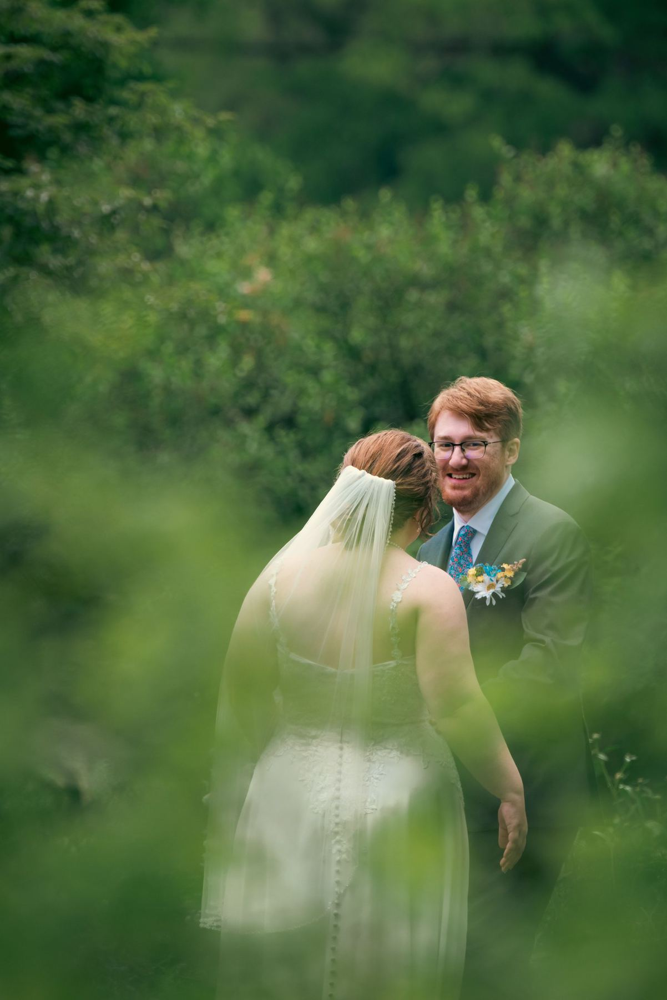
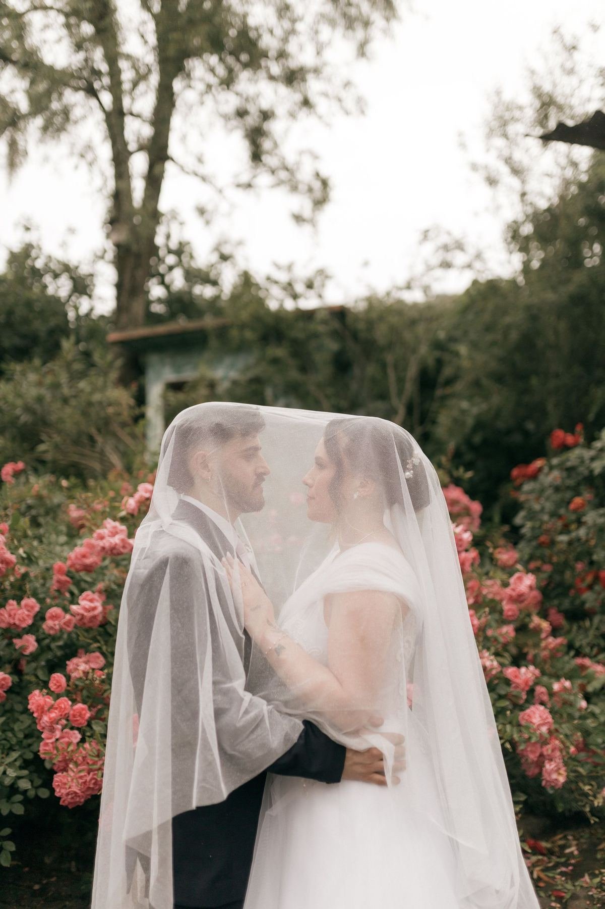

Pase de invitado
—
2lugares
Gracias por avisarnos. Te vamos a extrañar.
Jardín de la Luz · Cholula, Puebla
Camila
& Diego
Invitación para
Una tarde entre olivos, sin prisa.

Camila y Diego se conocieron en una clase de cerámica. Diez años después, siguen discutiendo por el mismo torno y eligieron un jardín para celebrarlo.
Queremos una boda sin prisa: ceremonia bajo los árboles, cena en el invernadero y baile hasta que el rocío nos saque.
La luz de Cholula a las seis es nuestro horario favorito. Ojalá estés ahí para verla con nosotros.
Camila & Diego
La primavera se va a poner buena. Guarda la fecha y avísanos antes de mayo.
Agregar al calendarioTodo pasa en el jardín. Trae calzado para tierra y una capa ligera para la noche.
En la explanada de los olivos. Llega media hora antes; hay té de limón en la entrada.
Vino natural, mezcal y botanas en la huerta. La luz empieza a bajar.
Invernadero, mesa larga. Menú de temporada con opción vegetariana.
La banda empieza y no para. Zapatos cómodos, el jardín es de tierra.
Nos vamos cuando se acaben las velas. Hay tamales para el camino.
Un vivero de 1940 convertido en casa. Olivos, invernadero de vidrio y un estanque que refleja el cielo. Nos enamoró la entrada de piedra y el silencio.
Camino a San Andrés 12, Cholula, PueblaToca cada punto del mapa para ver qué pasa ahí. El jardín no es enorme: todo queda a menos de cinco minutos caminando.
Vestido largo o midi, traje claro o traje oscuro. Los tacones finos se hunden en la tierra: mejor plataforma o suela ancha.
Evita el blanco y el verde olivo: son nuestros. El resto, bienvenido.

Algunos cuadros del jardín y de la gente que queremos.
Tu presencia es el regalo. Si además quieres ayudarnos con la luna de miel, aquí está nuestra cuenta. Se agradece en cualquier momento.
012 180 00123456789 3
Esta cuenta es de demostración. No se esperan transferencias reales.
Confirma antes del 15 de mayo de 2027. Los lugares son limitados y queremos tener una silla para ti.
Dudas por WhatsApp: +52 222 849 9652.
Tu respuesta quedó guardada. Tu pase está abajo.
Tu pase aparecerá aquí al confirmar.
Pase de invitado
—
2lugares
Gracias por avisarnos. Te vamos a extrañar.